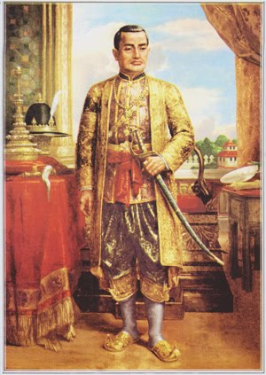
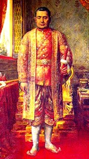
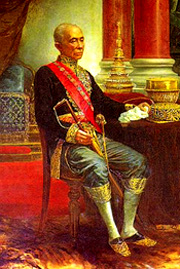
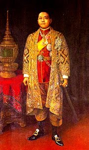
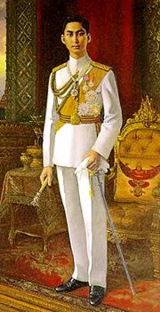
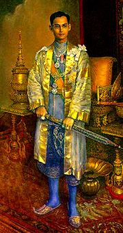
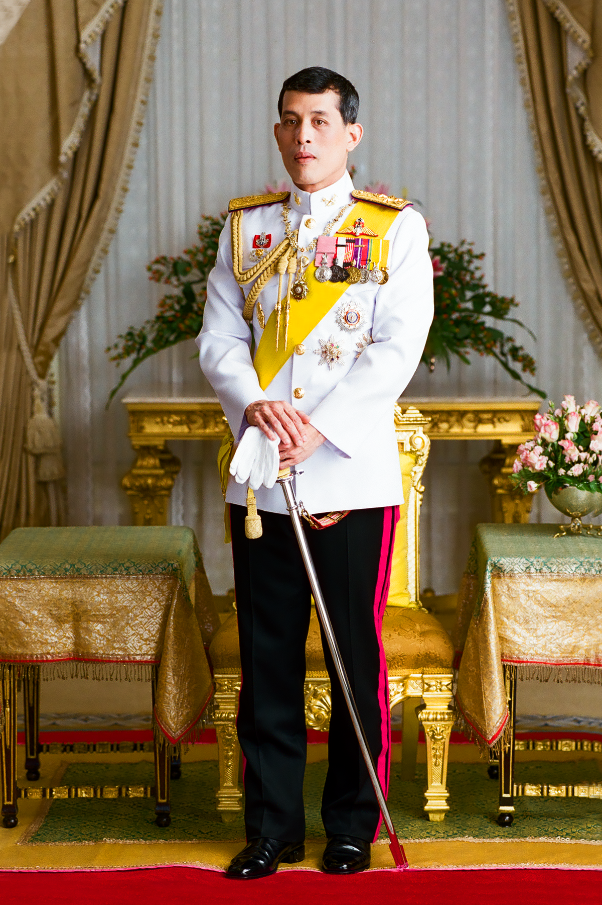

ประวัติศาสตร์ไทย สมัยราชวงศ์จักรี
ราชวงศ์จักรี
ราชวงศ์จักรี
เป็นราชวงศ์ที่ปกครองราชอาณาจักรสยามต่อจากสมเด็จพระเจ้ากรุงธนบุรีจนถึงปัจจุบัน
โดยพระบาทสมเด็จพระพุทธยอดฟ้าจุฬาโลกมหาราช (พระนามเดิม ทองด้วง
ทรงสืบเชื้อสายมาจากตระกูลขุนนางในสมัยกรุงศรีอยุธยา) ทรงสถาปนาราชวงศ์โดยการปราบดาภิเษกเมื่อ พ.ศ. 2325
ยุคของราชวงศ์นี้ เรียกว่า "ยุครัตนโกสินทร์"
ชื่อของราชวงศ์จักรีมีที่มาจากบรรดาศักดิ์ "เจ้าพระยาจักรีศรีองครักษ์" ตำแหน่งสมุหนายก
ซึ่งเป็นตำแหน่งทางราชการที่พระองค์เคยทรงดำรงตำแหน่งมาก่อนในสมัยกรุงธนบุรี คำว่า "จักรี"
นี้พ้องเสียงกับคำว่า "จักร" และ "ตรี" ซึ่งเป็นเทพอาวุธของพระวิษณุ
พระบาทสมเด็จพระพุทธยอดฟ้าจุฬาโลกมหาราชจึงทรงพระกรุณาโปรดเกล้าฯ ให้สร้างพระแสงจักรและพระแสงตรีไว้ 1 สำรับ
และกำหนดให้ใช้เป็นสัญลักษณ์ประจำราชวงศ์จักรีสืบมาจนถึงปัจจุบัน
รัชกาลที่ 1
พระราชประวัติรัชกาลที่ 1 แห่งราชวงศ์จักรี
พระบาทสมเด็จพระพุทธยอดฟ้าจุฬาโลกมหาราช(ประสูติ พ.ศ. 2279 ขึ้นครองราชย์ พ.ศ. 2325 - พ.ศ. 2352)
มีพระนามเดิมว่า ทองด้วง
รัชกาลที่ 2

พระราชประวัติรัชกาลที่ 2 แห่งราชวงศ์จักรี
พระบาทสมเด็จพระพุทธเลิศหล้านภาลัย
(ประสูติ พ.ศ. 2310 ขึ้นครองราชย์ พ.ศ. 2353 - พ.ศ. 2367)
มีพระนามเดิมว่า ฉิม
รัชกาลที่ 3
พระราชประวัติรัชกาลที่ 3 แห่งราชวงศ์จักรี
พระบาทสมเด็จพระนั่งเกล้าเจ้าอยู่หัว
(ประสูติ พ.ศ. 2330 ขึ้นครองราชย์ พ.ศ. 2367 - พ.ศ. 2394)
มีพระนามเดิมว่า พระองค์ชายทับ
รัชกาลที่ 4
พระราชประวัติรัชกาลที่ 4 แห่งราชวงศ์จักรี
พระบาทสมเด็จพระจอมเกล้าเจ้าอยู่หัว
(ประสูติ พ.ศ. 2347 ขึ้นครองราชย์ พ.ศ. 2393 - พ.ศ. 2411)
มีพระนามเดิมว่า เจ้าฟ้ามหามาลา
รัชกาลที่ 5

พระราชประวัติรัชกาลที่ 5 แห่งราชวงศ์จักรี
พระบาทสมเด็จพระจุลจอมเกล้าเจ้าอยู่หัว
(ประสูติ พ.ศ. 2396 ขึ้นครองราชย์ พ.ศ. 2411 - พ.ศ. 2453)
มีพระนามเดิมว่า เจ้าฟ้าจุฬาลงกรณ์
รัชกาลที่ 6
พระราชประวัติรัชกาลที่ 6 แห่งราชวงศ์จักรี
พระบาทสมเด็จพระมงกุฎเกล้าเจ้าอยู่หัว
(ประสูติ พ.ศ. 2423 ขึ้นครองราชย์ พ.ศ. 2453 - พ.ศ. 2468)
มีพระนามเดิมว่า สมเด็จเจ้าฟ้ามหาวชิราวุธ
รัชกาลที่ 7
พระราชประวัติรัชกาลที่ 7 แห่งราชวงศ์จักรี
พระบาทสมเด็จพระปกเกล้าเจ้าอยู่หัว
(ประสูติ พ.ศ. 2436 ขึ้นครองราชย์ พ.ศ. 2468 - พ.ศ. 2477)
มีพระนามเดิมว่า เจ้าฟ้าชายประชาธิปกศักดิเดช กรมหลวงสุโขทัยธรรมราชา
รัชกาลที่ 8

พระราชประวัติรัชกาลที่ 8 แห่งราชวงศ์จักรี
พระบาทสมเด็จพระปรเมนทรมหาอานันทมหิดล
(ประสูติ พ.ศ. 2468 ขึ้นครองราชย์ พ.ศ. 2472 - พ.ศ. 2489)
มีพระนามเดิมว่า พระวรวงศ์เธอ พระองค์เจ้าอานันทมหิดล
รัชกาลที่ 9
พระราชประวัติรัชกาลที่ 9 แห่งราชวงศ์จักรี
พระบาทสมเด็จพระเจ้าอยู่หัวภูมิพลอดุลยเดช(ประสูติ พ.ศ. 2470 ขึ้นครองราชย์ พ.ศ. 2489 - พ.ศ.2559)
รัชกาลที่ 10
พระราชประวัติรัชกาลที่ 10 แห่งราชวงศ์จักรี
พระบาทสมเด็จพระปรเมนทรรามาธิบดีศรีสินทรมหาวชิราลงกรณ พระวชิรเกล้าเจ้าอยู่หัว(ประสูติ พ.ศ. 2495 ขึ้นครองราชย์ พ.ศ. 2559 - ปัจจุบัน)